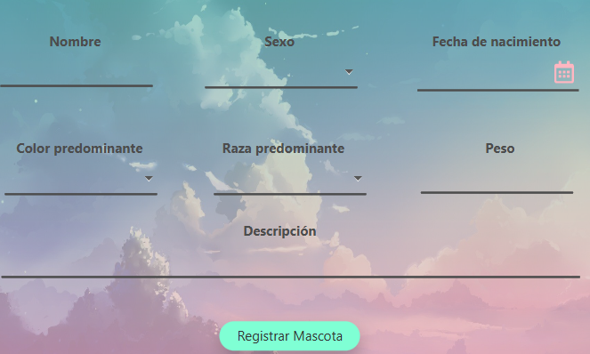

Para poder registrar a un animal primero debes abrir el menú que se encuentra en la parte superior izquierda.

Una vez abierto, pincha sobre la opción de "Registrar mascota".
Ésto te abrirá un panel con diferentes opciones a completar. Cuando rellenes toda la información del nuevo animal, selecciona el botón "Registrar animal" y se guardará en el sistema.
